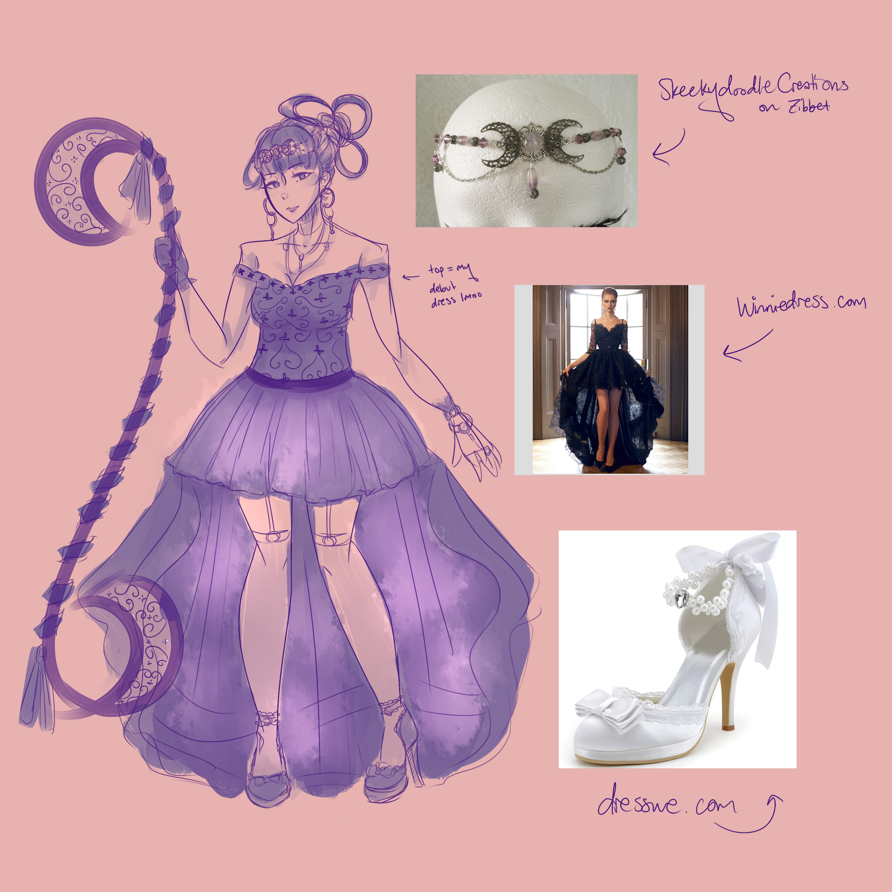
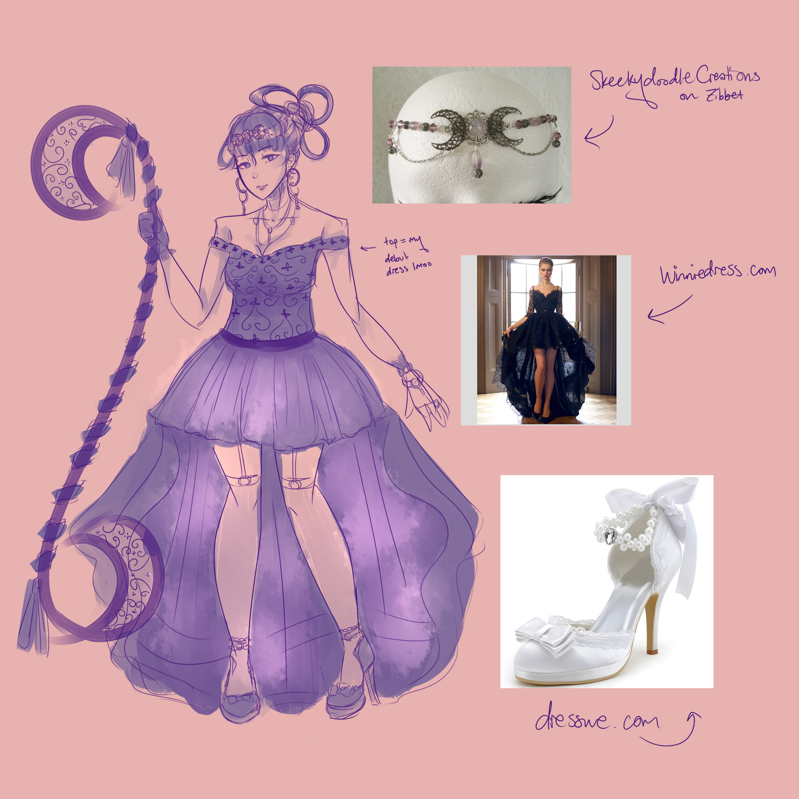
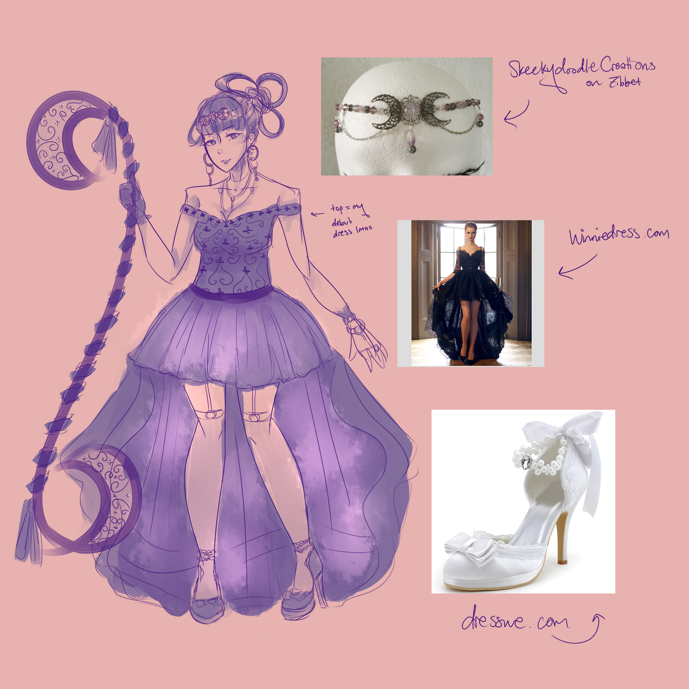

Mariel Nabor
Mariel Nabor is an undergraduate student at the University of California, Riverside. She is currently a third year set to earn a Bachelor of Science in Biology in June 2023.
She was born in the Philippines' Cotabato City and moved to California at seven months of age with her mother and father. Her first place of residence was with her great-aunts in Simi Valley, where the family of three stayed until her mother found work at a hospital in San Dimas. Since then, they have lived in the vicinity of West Covina, Walnut, and Rowland Heights throughout Mariel's continuing education.
From 2015 to 2019, she attended Rowland High School. There, in addition to her required courses, she took a two-year course in 2D Animation and one-year courses each of Criminal Justice and Forensic Science. She is well versed in graphics software such as Adobe Illustrator, Adobe Photoshop, Autodesk Sketchbook, Clip Studio Paint, Macromedia Flash, and iMovie as well as word processing software such as Microsoft Word and Apple Pages. Therefore, she can produce high quality illustrations and animations, edit together video clips and photos into a cohesive, entertaining product, and construct detailed academic reports. She is comfortable navigating the user interfaces of both Microsoft Windows and Apple iOS systems.
Concerning extracurriculars, one of her main ventures was competitive cheerleading, which she participated in for the majority of her elementary and middle school years. She has also dabbled in creative writing, character illustration, concept art, storyboarding, Flash animation, singing, and lyric-writing. One day, she would like to try learning how to compose music on any instrument.
(Repeated)
Mariel Nabor is an undergraduate student at the University of California, Riverside. She is currently a third year set to earn a Bachelor of Science in Biology in June 2023.
She was born in the Philippines' Cotabato City and moved to California at seven months of age with her mother and father. Her first place of residence was with her great-aunts in Simi Valley, where the family of three stayed until her mother found work at a hospital in San Dimas. Since then, they have lived in the vicinity of West Covina, Walnut, and Rowland Heights throughout Mariel's continuing education.
From 2015 to 2019, she attended Rowland High School. There, in addition to her required courses, she took a two-year course in 2D Animation and one-year courses each of Criminal Justice and Forensic Science. She is well versed in graphics software such as Adobe Illustrator, Adobe Photoshop, Autodesk Sketchbook, Clip Studio Paint, Macromedia Flash, and iMovie as well as word processing software such as Microsoft Word and Apple Pages. Therefore, she can produce high quality illustrations and animations, edit together video clips and photos into a cohesive, entertaining product, and construct detailed academic reports. She is comfortable navigating the user interfaces of both Microsoft Windows and Apple iOS systems.
Concerning extracurriculars, one of her main ventures was competitive cheerleading, which she participated in for the majority of her elementary and middle school years. She has also dabbled in creative writing, character illustration, concept art, storyboarding, Flash animation, singing, and lyric-writing. One day, she would like to try learning how to compose music on any instrument.
Experience
Volunteer Work
• Supervises the St. Lorenzo Soup Kitchen
• Mass lector
Education
UC Riverside
Portfolio
 


